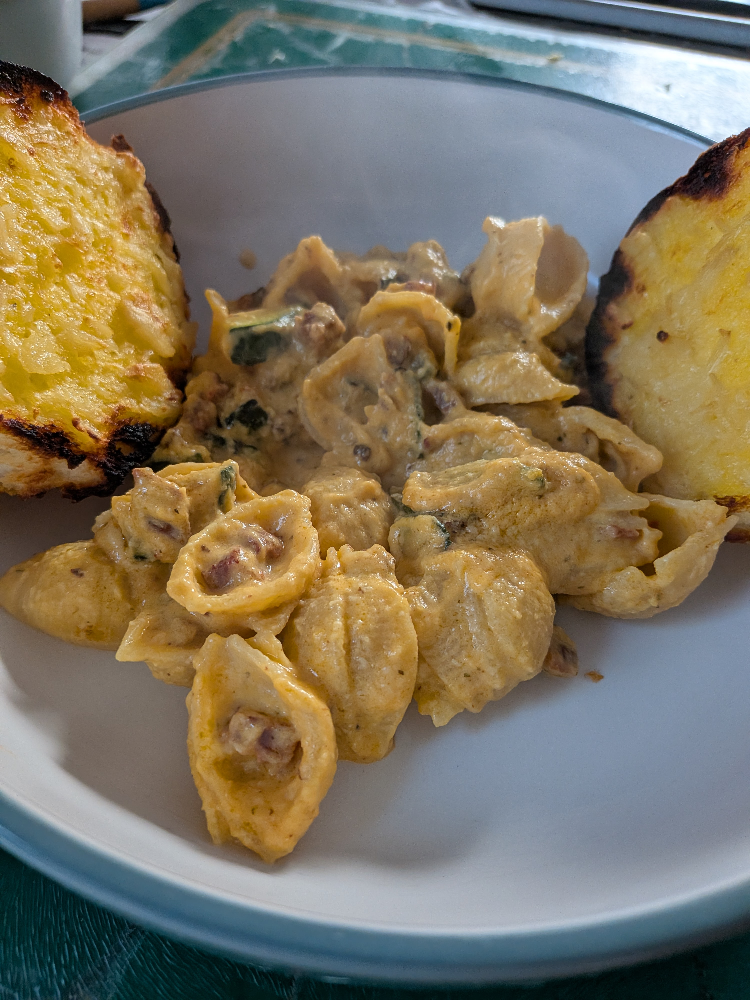

Butternut Squash & Feta Pasta

A creamy and easy pasta sauce made with roasted butternut squash and feta. I added chorizo and courgette to mine, but you can use whatever vegetables you fancy.
Ingredients
- Butternut squash, peeled and chopped
- Feta
- 1 onion, chopped
- 1 whole head of garlic
- Dried mixed herbs
- Olive oil
- Chorizo, chopped
- 1 courgette, chopped
- Gluten-free pasta
- Salt and pepper
- A little pasta water
Method
1. Place the butternut squash, feta, onion and garlic into an ovenproof dish.
2. Sprinkle over some dried mixed herbs and drizzle with olive oil.
3. Bake at 180°C for around 30 minutes, or until the butternut squash is soft and cooked through.
4. Meanwhile, cook the gluten-free pasta according to the packet instructions. Keep some of the pasta water before draining.
5. Fry the chorizo and courgette in a frying pan until cooked. Add a splash of pasta water to deglaze the pan.
6. Blend the roasted butternut squash and feta mixture until smooth, adding a little pasta water if needed.
7. Add the drained pasta to the frying pan, then add the sauce and mix everything together.
8. If the sauce is too thick, add another splash of pasta water until it reaches the consistency you like.
9. Serve while hot.
Freezing Tip
If you have some sauce left over, you can freeze it for another time.